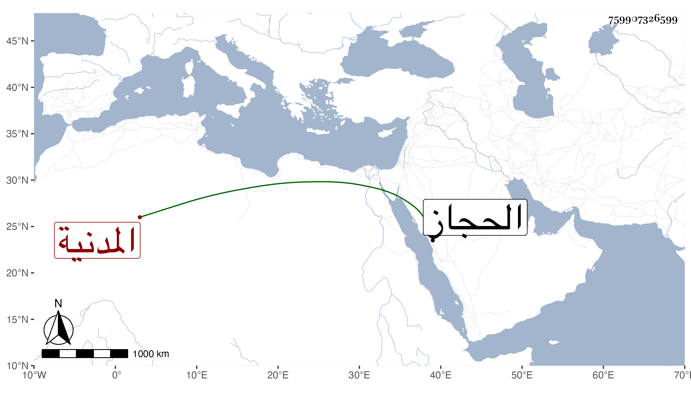

0902Sakhawi.DawLamic.ITO20230111-ara1.EIS1600.759907326599
Biography ID: 759907326599
211
رقية ابنة يحيى بن عبد السلام بن محمد بن أحمد بن عزاز بن مزروع أم الخير ابنة الامام محي الدين بن الامام عفيف الدين المضرية ثم البصرية المدنية . ولدت ظنا سنة ست وعشرين وسبعمائة ، وأجاز لها يوسف الختنى وعلي بن إسماعيل بن قريش وابن المصري وابن شاهد الجيش وزينب ابنة الكمال والبندنيجي والحفاظ المزي والذهبي والبرزالي وابن سيد الناس والقطب الحلبي ومغلطاي في آخرين من المصريين والشاميين وحدثت سمع منها الائمة . وماتت في صفر سنة خمس عشرة عن تسعين سنة ، وذكرها شيخنا في إنبائه بحذف اسم أبيها فقال رقية ابنة عبد السلام وأنها ماتت عن سبع وثمانين سنة وكذا في معجمه وقال أنها روت الكثير ولم ألقها وأظن أن لي منها إجازة . قلت وهي في عقود المقريزي وحدثنا عنها جماعة كثيرون والأبي وفي الأحيان ببلاد الحجاز الان مع سمع منها .
